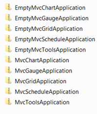
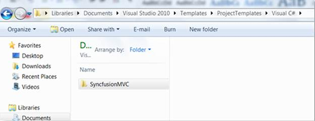
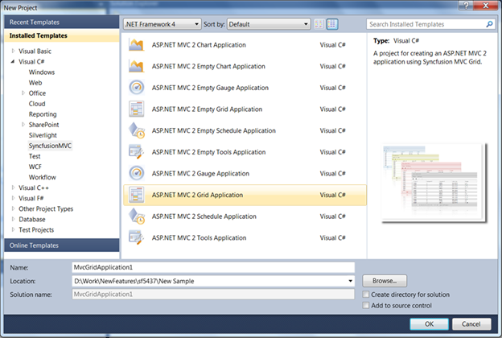

From version 8.4 onward, the project templates will automatically get installed along with the Syncfusion MVC setup. The project templates are placed in the following location:
%UserProfile%\Documents\Visual Studio 2010\Templates\ProjectTemplates\Visual C#
 Note: These project templates are for VS2010 only
and can be used in C# alone (as of yet).
Note: These project templates are for VS2010 only
and can be used in C# alone (as of yet).
However, to make use of the project templates for older versions:
Download the project templates for VS2010 Unzip the folder ‘SyncfusionMVC’. This folder contains the project templates for all Syncfusion MVC products, namely Grid, Tools, Schedule, Chart and Gauge.

Figure 8: List of Project Templates
By default, the project templates in VS2010 are stored in the following location:
%UserProfile%\Documents\Visual Studio 2010\Templates\ProjectTemplates
It will be more meaningful to place the templates under the folder Visual C# as they have been created for C# alone.
Note: Do not unzip the inner folders, which are
shown in the above image.

Figure 9: SyncfusionMVC Folder Location
Now, restart your Visual Studio 2010 and click New Project. Expand the Visual C# node and you will find the SyncfusionMVC node as a child node.

Figure 10: Syncfusion MVC Project Templates